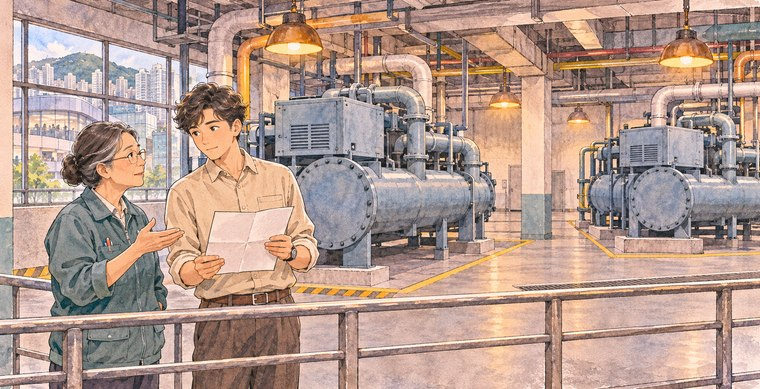

OPS-46 · Hong Kong · 15 minutes · Load allocation · Energy use · Running reserve · Discrete optimisation
Which chiller should carry the evening peak?

Cooling plants can optimise which chillers run
Hong Kong’s Electrical and Mechanical Services Department describes chiller sequencing as choosing when machines start or stop using information about demand and part-load performance. This example uses invented measurements for a small plant; it is not an operating procedure.
Your classroom decision
At a fictional Kwun Tong shopping centre, the plant has two chillers, A and B. During the next two-hour block the expected cooling demand is 300 kW. The table lists each unit’s allowed cooling outputs and its total electrical draw at each setting, including associated equipment. A dash is unavailable.
Supply exactly 300 kW of cooling during this block. Minimise electrical energy, calculated as total electrical power multiplied by two hours. Ignore start costs and assume a unit operating at zero is off. Cooling kW and electrical kW measure different quantities.
| Cooling output per unit (kW) | A electric draw (kW) | B electric draw (kW) |
|---|
| 0 | 0 | 0 |
| 100 | 27 | 20 |
| 200 | 49 | 43 |
| 300 | — | 63 |
Your decisionWhich combination meets 300 kW at the lowest electricity use? Show the feasible combinations and their two-hour consumption.
Round 2 · More information
Maintenance advises that a 100 kW cooling surge could arrive on short notice. Require at least 100 kW of unused output capacity from already running chillers. An offline unit cannot start fast enough to count. Compute reserve as each running unit’s maximum cooling output minus its current output.
Your decisionWhich schedule is least costly with the reserve rule, and what is its extra energy use before any surge? Could the plant meet both requirements if A were unavailable?
Debrief · Make a feasible list
Three combinations supply exactly 300 kW: A off and B at 300; A at 100 and B at 200; A at 200 and B at 100. They draw 63, 70 and 69 kW respectively, or 126, 140 and 138 kWh for two hours. Start with B alone under the original objective.
Debrief · Count only the power already on
B alone has zero reserve at 300. With both units running, their combined maximum is 500 kW and current output is 300, so each two-unit combination carries 200 kW of running reserve. A at 200 and B at 100 draws less power than the other qualifying combination.
Debrief · Price the extra headroom
The selected reserve schedule uses 138 − 126 = 12 kWh more before a surge. If A is unavailable, B can meet the base load but cannot also hold 100 kW in reserve. The two targets then cannot both be met by this plant.
Takeaway · Don’t confuse nameplate and useful reserve
A machine can be installed and operable without contributing immediately to reserve. The illustration is discrete and single-block. Real plant decisions need verified models for pumps, starts, weather and site-specific controls.
Instructor note
Allow 15 minutes: 3 for units and feasible settings, 4 to compare ordinary dispatch, 5 to test reserve, and 3 for interpretation. Ask whether adding nominal capacity would help if it could not respond in time.
Round two
Maintenance advises that a 100 kW cooling surge could arrive on short notice. Require at least 100 kW of unused output capacity from already running chillers. An offline unit cannot start fast enough to count. Compute reserve as each running unit’s maximum cooling output minus its current output.
Your decisionWhich schedule is least costly with the reserve rule, and what is its extra energy use before any surge? Could the plant meet both requirements if A were unavailable?